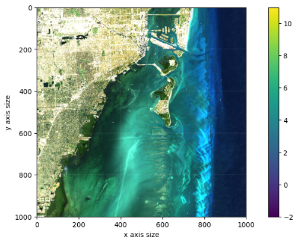
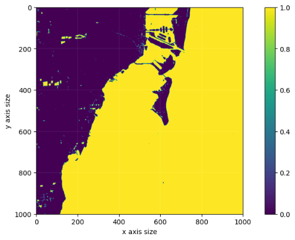
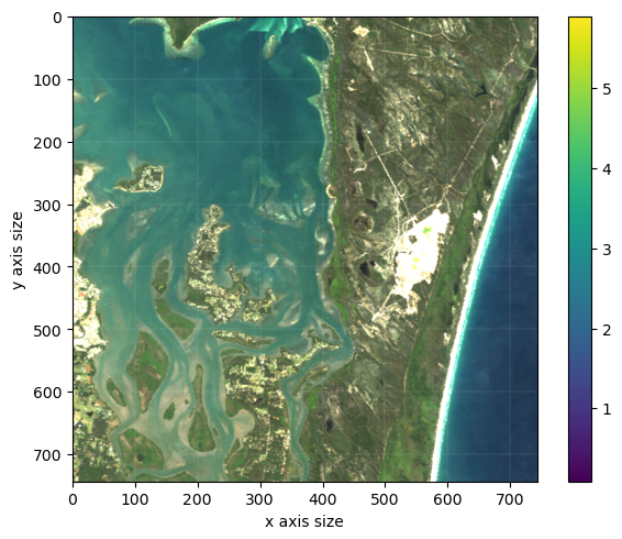
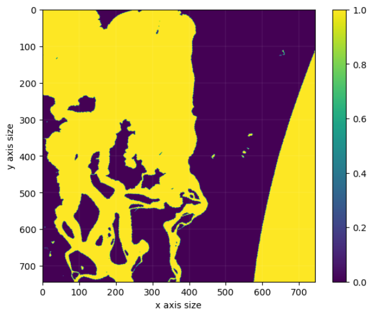

water.waterdetect()
Detects water areas from landsat8 satellite images using green band,red band,nir band,mir band and mir2 band .
Use an agglomeration algorithm to classify objects detected in an image and naive bayes algorithm classifiers object and identify water.
Parameter : max_k : int ,optional
Number of cycles to optimize three in clustering process
classifier : str,optional
The Classification algorithm
clustering_method : str,optional
clustering algorithm
Notes
The agglomerative clustering is the most common type of hierarchical clustering used to group objects in clusters based on their similarity. It’s also known as AGNES (Agglomerative Nesting). The algorithm starts by treating each object as a singleton cluster. Next, pairs of clusters are successively merged until all clusters have been merged into one big cluster containing all objects. The result is a tree-based representation of the objects, named dendrogram.
Naive Bayes is a simple technique for constructing classifiers: models that assign class labels to problem instances, represented as vectors of feature values, where the class labels are drawn from some finite set.
Example 1
Waterdetection (Local)
>>> # import library
>>> from lazyearth.common import objearth as oe
>>> from lazyearth.water import water
>>> # Load landsat8 data
>>> blue = oe.bandopen("...\LC08_L1TP_015042_20211223_20211230_01_T1_sr_band2.tif")
>>> green = oe.bandopen("...\LC08_L1TP_015042_20211223_20211230_01_T1_sr_band3.tif")
>>> red = oe.bandopen("...\LC08_L1TP_015042_20211223_20211230_01_T1_sr_band4.tif")
>>> nir = oe.bandopen("...\LC08_L1TP_015042_20211223_20211230_01_T1_sr_band5.tif")
>>> mir = oe.bandopen("...\LC08_L1TP_015042_20211223_20211230_01_T1_sr_band6.tif")
>>> mir2 = oe.bandopen("...\LC08_L1TP_015042_20211223_20211230_01_T1_sr_band7.tif")
>>> rgb = oe.bandcombination(red,green,blue)
>>> oe.plotshow(rgb)

>>> # prepare data
>>> ls8_bands = {'Blue':blue,
'Green':green,
'Red':red,
'Nir':nir,
'Mir':mir,
'Mir2':mir2}
>>> # Water detection
>>> Wd = water(ls8_bands).waterdetect()
>>> oe.plotshow(Wd)

Example 2
Waterdetection (Datacube)
>>> # import library
>>> from lazyearth.common import objearth as oe
>>> from lazyearth.water import water
>>> # prepare data
>>> print(ds)
<xarray.Dataset>
Dimensions: (latitude: 743, longitude: 743)
Coordinates:
time datetime64[ns] 2015-07-02T11:59:59.999999
* latitude (latitude) float64 -27.5 -27.5 -27.5 ... -27.7 -27.7 -27.7
* longitude (longitude) float64 153.3 153.3 153.3 ... 153.5 153.5 153.5
spatial_ref int32 4326
Data variables:
blue (latitude, longitude) int16 462 461 461 459 ... 359 363 359 358
green (latitude, longitude) int16 478 475 474 470 ... 255 256 251 252
red (latitude, longitude) int16 215 212 210 208 ... 165 166 161 162
nir (latitude, longitude) int16 82 83 82 80 78 ... 143 146 140 140
swir1 (latitude, longitude) int16 49 49 48 47 47 ... 109 112 107 109
swir2 (latitude, longitude) int16 40 41 40 38 37 ... 92 91 92 90 93
sdev (latitude, longitude) float32 0.004089 0.004165 ... 0.01818
edev (latitude, longitude) float32 92.71 95.55 97.62 ... 252.3 231.2
bcdev (latitude, longitude) float32 0.07602 0.07638 ... 0.2588 0.2622
count (latitude, longitude) int16 17 17 17 17 17 ... 18 18 18 18 18
Attributes:
crs: EPSG:4326
grid_mapping: spatial_ref
>>> # rgb image
>>> rgb = oe.bandcombination(ds.red,ds.green,ds.blue)
>>> oe.plotshow(rgb)

>>> # Water detection
>>> Wd = water(ds).waterdetect()
>>> oe.plotshow(Wd)
